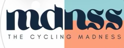

Comunidad ciclista de Barcelona con alcance real, contenido de alto rendimiento y experiencias propias. Buscamos marcas que entiendan el ciclismo, la comunidad y las experiencias como nosotros — para construir algo juntos, no solo estar presentes.
Porque al final, Madness son las personas.
The Cycling Madness nace de una idea sencilla: hacer de las salidas en bici algo más — una experiencia. Retos de un día, autoimpuestos, con ruta y formato inventados por la propia comunidad en Barcelona.
Siempre buscamos aportar valor a nuestra comunidad — por eso colaboramos con marcas que entienden el ciclismo, la comunidad y las experiencias de la misma manera que nosotros. No para estar presentes: para formar parte de lo que hacemos.
The Cycling Madness nace de crear experiencias propias — retos de un día, autoimpuestos, con ruta y formato inventados por MDNSS: cruzar comunidades enteras en bici, dar la vuelta a una isla en un solo día, o rodar toda la noche por el mismo circuito. Esa "locura" autoimpuesta es el origen de la marca — no un formato más entre otros.
MDNSS no es solo un grupo de salidas o solo un equipo de carreras: es ambas cosas a la vez. Así es como se estructura la comunidad — y por dónde puede entrar una marca.
Rutas y salidas abiertas, ritmo variable — punto de entrada para cualquier miembro de la comunidad.
Retos de un día inventados por MDNSS: racing, superación y experiencia de grupo, en formato masivo o en grupo pequeño.
Origen de la marcaColaboración con organizadores de gran fondos: MDNSS viaja y compite junto como equipo, no como individuos sueltos.
Corredores de MDNSS ya compiten en categoría federada — una realidad actual de la marca, no un objetivo futuro.
Las cuatro capas ya están en marcha — comunidad, experiences/retos propios, gran fondos en equipo y competición federada. La comunidad de MDNSS es, ante todo, presencial y de Barcelona: rutas semanales y quedadas reales en la ciudad, no solo alcance en redes.
Usamos el nombre MDNSS como punto de encuentro entre personas distintas que comparten una misma pasión — y como plataforma para que una marca entre en cualquiera de las cuatro capas.
Datos de Instagram de los últimos 90 días. El contenido se ve muy por encima del número de seguidores — no es alcance comprado.
Público mayoritariamente adulto (25–54 años) con perfil de comprador de material ciclista de gama alta.
Comunidad local en Barcelona / Cataluña — presencial, no solo alcance digital.
Cada colaboración se plantea como un capítulo de una misma narrativa: comunidad, producto, aventura y contenido audiovisual.
La marca integrada en experiencias ciclistas reales y memorables, diseñadas y organizadas por MDNSS — no un banner en un evento ajeno.
Producción audiovisual pensada para redes sociales — reels, fotografía y stories reutilizables durante toda la temporada.
Acceso directo a una comunidad ciclista activa, participativa y en crecimiento en Barcelona.
Los mismos cuatro niveles de la comunidad, ahora como formatos de activación. Cada uno se adapta al tamaño y objetivo de la colaboración.
Rutas abiertas con ritmo variable, punto de entrada para la comunidad — ideal para presentar producto a un grupo amplio en un entorno relajado, con desayuno o avituallamiento de marca.
Ejemplo: 100–200 km · hasta 100 participantesRetos de un día autoimpuestos, con ruta y formato inventados por MDNSS — el ADN de la marca. Máxima intensidad narrativa y de contenido, con grupo reducido y muy comprometido.
Ejemplo: 300+ km en un día · 10–20 participantesMDNSS viaja y compite como equipo en gran fondos de referencia — la marca aparece en contexto real de esfuerzo y competición, no en un escaparate.
Ejemplo: 200–320 km · marchas de prestigio nacional/internacionalCorredores de MDNSS compitiendo en categoría federada — visibilidad de marca en el contexto más exigente y creíble del ciclismo de competición.
Ejemplo: calendario de copa regional/nacionalCada experiencia genera presencia de marca antes, durante y después del evento. Entregables estándar por evento, ajustables según la colaboración.
Escríbenos y te mandamos el calendario de experiencias de la temporada, cifras detalladas y propuestas de colaboración a medida.